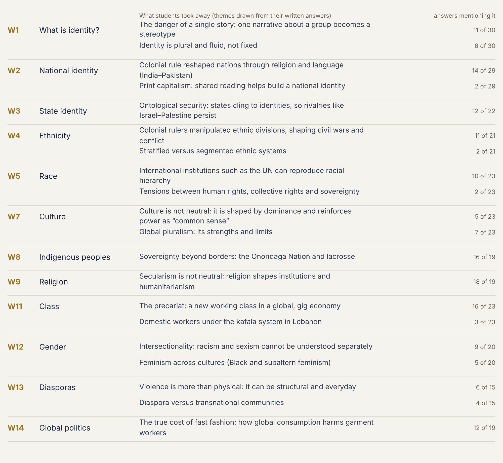
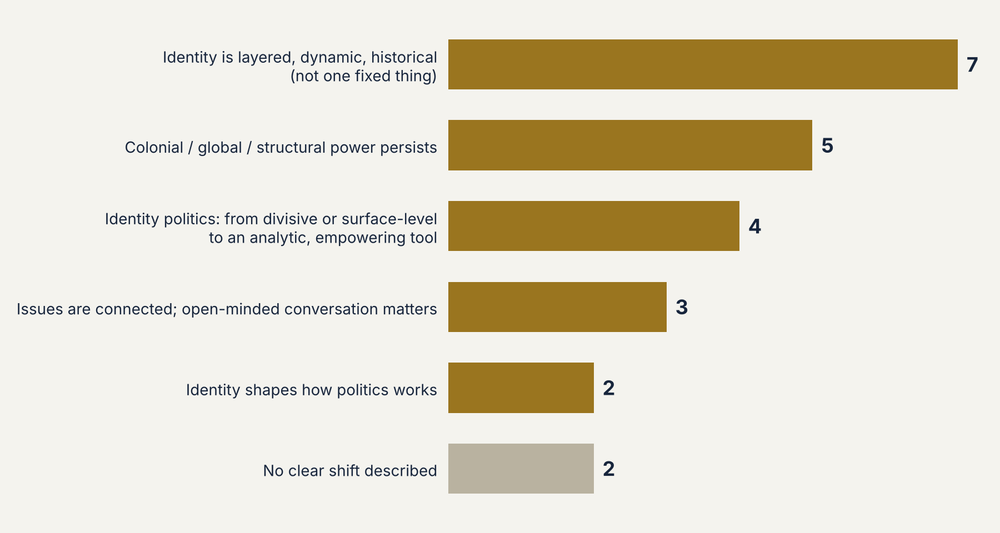

Teaching
Teaching students to reason about power, in writing and in data.教学生用写作与数据，分析权力。
At The Ohio State University I teach undergraduate courses on identity politics and on reading and presenting political data, and I have led methods recitations for graduate students.我在俄亥俄州立大学讲授身份政治以及政治数据的阅读与呈现等本科课程，并曾主持研究生方法课的习题课。
Approach教学理念
I teach the way I research: by asking students to examine the order they arrive in. In Identity Politics (Spring 2025), writing is the method itself. Weekly minute papers, thesis-driven reflections and a midterm essay ask students to take and defend positions, and I adjust the course within the week based on what they tell me. The syllabus presents each theoretical framework as a tool for analysis, not a prescription for belief, so students from different political starting points can disagree productively. In Data Literacy and Visualization and in graduate methods recitation, I teach quantitative skills to students who do not think of themselves as quantitative. We work problems in the room, and students critique published charts before building their own. The Identity Politics course received the Outstanding Writing Instruction Award (2024–25), and students rated my overall effectiveness 4.81 out of 5.00, against a university mean of 4.42 for classes of its size.我的教学与研究一脉相承：引导学生审视自己所处的秩序。在《身份政治》（2025 年春）中，写作本身就是教学方法：每周“一分钟短文”、以论点为中心的反思写作和期中论文，要求学生表明并捍卫立场，我也会根据他们的反馈在当周调整课程。课程大纲把各种理论框架定位为分析工具，而非信念教条，使不同政治立场的学生都能有效地展开分歧。在《数据素养与可视化》和研究生方法课习题课上，我面向“不觉得自己擅长定量”的学生，通过现场解题、先批判已发表的图表再自己制图的方式教学。《身份政治》一课获俄亥俄州立大学杰出写作教学奖（2024–25），学生对我的总体评分为 4.81（满分 5.00），高于同规模课程的全校平均 4.42。
Award奖项
Outstanding Writing Instruction Award, 2024–25. Writing Across the Curriculum, Center for the Study and Teaching of Writing, The Ohio State University. Awarded for writing instruction in POLITSC 3910 Identity Politics.杰出写作教学奖，2024–25 学年。俄亥俄州立大学写作教学与研究中心“跨课程写作”（WAC）项目，表彰我在 POLITSC 3910《身份政治》中的写作教学。
Courses taught授课课程
POLITSC 3910: Identity Politics
How identity shapes political and social life across race, ethnicity, gender, class, and nationality. Students apply constructivist, Marxist, feminist, postcolonial, and post-structuralist theories to historical and contemporary cases, with attention to global governance, inequality, and social movements. Writing-intensive, with an emphasis on respectful disagreement across political perspectives.身份如何塑造跨越种族、族群、性别、阶级与国籍的政治与社会生活。学生运用建构主义、马克思主义、女性主义、后殖民与后结构主义理论分析历史与当代案例，关注全球治理、不平等与社会运动。课程以写作为核心，并强调在不同政治立场之间进行尊重的讨论。


POLITSC 3780: Data Literacy and Visualization
An introduction to exploratory data analysis and visualization for political science, with no statistical prerequisite. Students learn to clean, explore, and graph political data in R (ggplot2), map networks, and critically evaluate data-based arguments. Satisfies the university General Education requirement in Data Analysis.面向政治学的探索性数据分析与可视化入门课程，无需统计学基础。学生学习用 R（ggplot2）清理、探索并绘制政治数据，绘制网络图，并批判性地评估基于数据的论证。满足学校通识教育“数据分析”要求。
Teaching assistant助教经历
POLITSC 7552: Quantitative Methods II (Linear and Generalized Linear Models)
Graduate methods core. I taught the weekly R recitation, covering simulation, regression, binary, count, and ordered models, and advanced graphics, and supported problem sets.研究生方法核心课。我主持每周的 R 习题课，内容包括模拟、回归、二元、计数与有序模型及高级绘图，并辅导习题作业。
GPPS 400: International Relations of the Asia-Pacific
Survey of the region’s international relations, from power transition and the rise of China to the Koreas, Taiwan, and Southeast Asia. I helped design the syllabus, held office hours, and advised students on their policy memos.涵盖亚太国际关系的概览课程，从权力转移与中国崛起到朝鲜半岛、台湾与东南亚。我参与设计课程大纲，负责答疑，并指导学生撰写政策备忘录。
Teaching interests教学兴趣
International relations (introductory, Asia-Pacific, postcolonial); identity politics in world politics; public opinion and foreign policy; data literacy and visualization; text as data; introductory quantitative political analysis. I would also develop a course on empire and international order.国际关系（入门、亚太、后殖民）；世界政治中的身份政治；民意与外交政策；数据素养与可视化；文本即数据；定量政治分析入门。我也愿意开设“帝国与国际秩序”方向的课程。